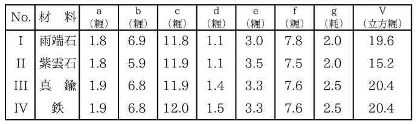

前文に於て墨流しの現象の物理学的研究を紹介した。その研究では墨を磨る時の水の成分のことは詳しく調べてあったが、用いた硯は普通市販の一定の硯に限られていた。それで寺田先生は次に、色々の墨を色々の硯で磨った時に、墨汁の膠質的性質が如何に変わるかという問題にとりかかられたのである。
墨汁の色々の性質特に墨色などが、墨の良否によるばかりでなく、硯の種類によっても著しく左右されるということは、画家及び書家の間では常識となっている。古来名硯と称せられるものの色々の特性については、伝説的な説明が沢山ついているが、それらの主張は主として古代の支那文献から伝わったものである。例えば良い硯で墨を磨ると、ちょうど熱した銅の上で蝋を磨るような手触りであるというような説明がある。従来の大抵の記載はこの種の主観的なものが多いのであるが、この実験で墨と硯との間の摩擦係数、墨のおり方、粒子の大きさなどを調べて見ると、墨汁の物理的性質は硯によってもまた著しく異なるということが、客観的に実証されたのであった。
墨と硯との関係を定量的に決めるには、第一に磨り方を一定にする必要がある。一定の墨を甲乙二つの硯で磨って得た墨汁を比較する時、磨り方が異なっていたら何もいうことは出来ない。それで、墨の底面が一定の圧力で、垂直に硯の面に圧しつけられながら、決まった距離を決まった週期で、反覆的に動くような装置を作る必要がある。第一図はその目的の為に作られた装置である。
第一図
図中Ｖが硯で、Ｓが墨である。Ｈは墨をはさむ筒で、それがＫなる外側の鞘の中を垂直に上下するようになっている。Ｗは重量である。ＫとＨとの間の
この実験では、以上の装置で三十分間磨らせて、その墨汁の色々の物理的性質を調べることとした。三十分で墨は硯の上を総計三百
墨も硯も特殊のものは用いず、普通に手に入るものについて調べた。墨は四種類で、その大きさ、密度などは第一表に示す如くである。墨の組成は同じ種類のものでも、一本一本について少し異なることは考えられるし、また一本の墨についても端の方と真ん中とでは違うので、磨って行くうちに性質が異なって来ることも考えて置く必要がある。しかしこの実験の精度の範囲内では、その点まで心配しなくても良いことが分かった。
第一表

第二表
次に硯は第二表に示すような四種類のものを用いた。この中真鍮及び鉄の硯は、理研の工場でこの研究の為に作ったものである。硯の形及び大きさは第二表に示した如くである。表中ａｂｃ…等は第二図にあるように、硯の各部分の長さである。Ｖは硯の縁まで一杯に水を入れた時の容積を示す。金属製の硯は従来ほとんど使用されていないので、何か欠点があるのだろうという見込みで、わざわざ作って調べて見たのであるが、やはり色々な点で石の硯より劣っていた。その結果は後に述べる通りである。
第二図
次に硯の乾かし方が問題になる。特に摩擦係数の測定の際にはその影響が大きいので、硯がほんの少し湿っていても測定結果がまちまちになるのであった。それで硯を一度使用する毎に、まず水道の水で十分洗い、次に蒸溜水で洗って、それを大きい硝子器に入れ、その内部を低度の真空にして、その中で乾かした。こういう風にすると、塵の心配もなく、測定結果も一定の値が得られた。
以上の装置で墨を三十分間磨って、その時水の中へ溶け出た墨の実質の目方をＱとする。Ｑは墨の目方を予め測っておいて、磨り減ってからまた測り、その差を見れば分かるはずであるが、実際には磨っている間に水を吸収するので、後の目方を測るには注意が要る。それでＱを測るのに二つの方法を用いた。第一は、墨を空気中に放置した状態で前の目方を測っておく。次に磨り減らした後に、墨汁をよく拭いとって天秤の皿に載せて放置し、時々目方を測る。するとだんだん乾燥して行くので、目方が少しずつ軽くなる。それを曲線に描いて、その終局の値を推定すれば、磨り減った後の墨の空中での乾燥状態の目方が分かる。それで前の目方との差をとればＱが分かるのである。第二の方法は、墨を磨る前も後も、いつでも目方を測る前には、真空中で二、三時間乾燥させてそれから測定するのである。この二つの方法を試して見たら、大体一致した結果が得られたので、これらの方法で磨り減った量をかなり精密に測定することが出来ることが分かった。
このようなことをくだくだしく説明するのは、不必要と思われるかもしれないが、実際のところ磨り減った墨の量を測定するという簡単なことでも、実際にはなかなか厄介なのである。墨の目方は相当あり、磨り減った量はごく少ないので、前後の目方の差から磨り減った量を測るには、色々な注意が要るのである。ちょうど甕の目方を測っておいて、それに水を一滴入れてまた目方を測り、前後の値の差から水滴の量を測定するというような場合と似ているからである。
第三図
摩擦係数は静止の状態から動き始める時の値、即ち静摩擦係数を測った。同時に硝子と硯との間の摩擦係数も測定して両者を比較した。墨と硯との間の摩擦係数をμsとし、硝子と硯との場合をμgとした。μsの測定には第三図のような装置を作り、墨片Ｐが滑り落ち始める時の角θを測って、μs＝tanθによってμsを求めた。Ｐは墨 No.1から切り取った四角の片で、1.7×1.2×1.1立方
普通に摩擦係数というと、堅い固体の表面間のものしか研究がして無いので、墨と硯のように一方が磨り減る場合には、問題がずっと難しくなる。それで硝子の場合も測定しておいて、それと比較しようというのである。
墨粒子の大きさの測定には、上述の装置で三十分間磨って得た墨汁は濃すぎるので、測定に適するように薄めて用いた。普通三百倍ないし三千倍に薄めてちょうどよかった。即ち墨汁の濃度を1.6×10−5ないし3.5×10−6
一定の墨を一定の硯で、第一図の装置を用いて、一定の条件の下で磨っても、墨のおりる量Ｑはその都度異なる。即ち磨墨の為に硯の面も幾分磨り減って滑らかになることが分かった。この関係を調べる為に、硯の面を細かい砂紙で大体一定の条件の下で磨いて、各系の実験の始めに於て、硯の面を同じような粗さにしておく。そして第一図の装置で三十分間磨ってその際墨のおりた量Ｑと、その墨汁の粒子直径Ｄとを測定する。それから硯を洗って、真空内で乾かして、摩擦係数を測る。次に硯の面をそのままにしてまた三十分磨って見る。すると今度はＱが少し小さくなることが分かった。そういうことを二十回ばかり繰り返して一系の実験を済ませる。次には硯の面をまた砂紙でこすって新しくし
第四図
紫雲石の硯について四種類の墨を調べた結果は、第四図に示す如くである。即ちＱの値は大体対数曲線的に減じて行くが、最後になるとほとんど一定の値になる。硯を手入れせずに長く使っている場合ならば、この最後のＱの値がその墨のおり具合の遅速を示すものとなる。この結果で見ると、おり方は墨によって著しく異なり、墨 No.2が一番速くおり、No.4はその三分の一以下しかおりないことが分かる。簡単に云えば No.4が一番堅い墨ということになる。これは第一表に示すように、比較的旧い墨であるが、年代が経つと堅くなるのか否かはこの一例では決定出来ない。色々の材料があれば、その点を確かめることが出来るはずである。曲線の初めの部分即ち急に減少する部分は大体同じ形であるが、No.4の場合だけは著しく急に減少している。即ち堅い墨で磨ると硯の面の磨り減り方が速いことがよく見られる。
この曲線をごく大ざっぱに見て対数曲線とすると、
Ｑ＝Ｑ0θ−kn
という式で表せる。ここでｎは磨った回数をあらわし、ｋが硯の面の磨り減り方を示す係数となる。ｋが大きいと速く磨り減るのである。第五図
各種の硯を用いて一定の墨を磨り、前と同様の実験を行うと、硯の性能の比較が出来る。第五図は墨 No.1をそれぞれ紫雲石、雨端石及び真鍮の硯で磨った場合の結果を示すものである。鉄の硯も真鍮の場合とほとんど同じ値を示すもので、混雑を省く為に図では鉄の場合を略してあるが、真鍮とほとんど同じ曲線になると思って差し支えない。第五図の結果で著しいことは、雨端石の硯は、非常に速く磨り減るということである。即ちこの硯では面が粗い間は相当よく墨がおりるが、その面は
第六図
墨と硯との間の摩擦係数μsもＱと同様に磨っているうちに減少する。その様子は第六図に実線で示す如くで、初めはかなり急激に減少するが、後にはほぼ一定の値に落ち付く。ここで注意すべきことは、紫雲石の硯ではμsが0.37くらいに落ち付くのに、真鍮ではどんどん減少してしまうことである。即ち真鍮の場合には、表面がすぐ磨いた状態になってしまうが、紫雲石の場合は、なかなかそのような状態にはならない。従って墨のおり方もいつまでも速いのである。端渓などの場合には、表面に
同時に硝子と硯との摩擦係数を測った結果も、第六図に描きこんである。この場合は、紫雲石では初めμgが増して行き、ある値以上のｎになると一定の値となる。真鍮ではそのような傾向は認められず、徐々に減少するばかりである。摩擦係数がこのように妙な変化をすることは、ちょっと類例の少ない現象で、寺田先生は色々の考察の結果、次のような説明を下された。石の硯と墨との場合、表面が粗いと、突出部が墨の膠に機械的の力を及ぼして、その
第七図
磨墨につれて墨のおりる量Ｑが減少することは、上述の通りであるが、その際粒子の直径Ｄも段々小さくなることが、実験的に確かめられた。即ちＤとｎとの曲線を作って見ると、第四図または第五図と似た形になった。このことはＱとＤとの間に簡単な関係があって、墨の速くおりる時は、粒子が大きいということになる。ＱとＤとの関係を図示すると第七図のようになる。ここで面白いことは、紫雲石と雨端石とが同一直線上に載り、真鍮と鉄とが別の直線上にあるということである。即ち石の硯と金属とでは、墨の粒子の大きさが断然違うのである。
この関係を直線と見ると、
Ｄ＝Ｄ0＋aQ
なる式で現すことが出来る。この直線はＯなる原点を通っていないので、Ｑ＝０の時も粒子直径はＤ0なる値を持つことになる。このＤ0が墨の粒子の最小の値を示すもので、石の硯の場合は十万分の一ないし三石の硯に就いて見ると、用いられた硯二種墨三種の色々な組み合わせが、皆同一直線上にある。
前述第五図に於て雨端石と真鍮とが共に墨のおり方が悪いという結果になっていたが、今度の第七図で見ると、雨端石の方は粒子が小さくなるのでおりる量が減るのであるということが分かる。真鍮の方はこれに反して、墨のおりる量は少なくして、しかも粒子は大きいのである。その点雨端石と真鍮とは著しく異なるのである。
第八図
墨のおり方Ｑと摩擦係数μsとの関係は、第八図に示すようになる。図中の曲線から紫雲石の硯と金属の硯とが著しい性質の差を示すことが見られる。金属の場合にはμsが0.15くらい以下になるとＱがほとんど零になり、それ以上ではＱとμとの間には直線的関係が成立する。即ち、
Ｑ＝Ａ（μs−μs0）
なる簡単な関係が成立する。ここでμs0はＱがほとんど零になる時の摩擦係数で、即ち金属面が十分に磨かれた状態になった時の値である。その値は真鍮の方が鉄の場合よりも大きい。紫雲石の場合は、μsは第六図に見られるように、磨墨によっては0.37以下には減少しない。硯の面がそれより少し粗くなると、Ｑは初めは金属の硯よりも徐々に増すが、面が十分粗くなると、即ちμsがある値以上大きくなると、Ｑが急に増大する。
以上の結果から見て、金属の硯の方が石よりも悪いということが明瞭に分かる。従来金属の硯というものがほとんど用いられなかったのももっともである。即ち石の硯では磨墨によって面が完全に平滑になることがなく、何時までも一定の粗度を保つことが、摩擦係数の実験から分かる。このことが墨のおり方を速くするのである。金属の硯はこれに反し、磨墨によって直ぐに面が平滑になり、墨のおり方が非常に悪くなる。それも墨汁の粒子が小さくなる為におり方が少なくなるのならば、その点で使用目的があるが、この場合は粒子もまた大きいのである。
第九図
電解質を含む水で墨を磨った時の墨のおり方Ｑと粒子直径Ｄとを調べる為に、色々の濃度の苛性加里液及び塩酸水溶液で墨を磨りその時のＱとＤとを測って、蒸溜水の場合と比較して見た。その結果は、酸の時はＱもＤも蒸溜水の時より大きく、アルカリの時は逆に小さいということが分かった。酸もアルカリも膠を軟らかくする性質があるから、もしその為とすると、両方共Ｑは蒸溜水の時より大きくなる必要がある。ところが実際はアルカリの場合は蒸溜水よりもＱが小さいのである。それで次のようなことが考えられる。墨の粒子は負に帯電していることは分かっているので、酸のＨ＋イオンがこれを中和する為、粒子が凝集を起こし易く、その為Ｄが大きくなる。アルカリはOH−イオンがある為に凝集を妨げて、粒子は小さいと考えられるのである。それでＱとＤとの関係を図にして見たところが、第九図のような結果を得た。これと第七図とを比較して見ると、Ｑ―Ｄの関係は、酸アルカリの如何を問わず、蒸溜水と同じ直線上に載るのである。換言すれば酸の点○は硯の面の粗な方に相当し、アルカリの点●は硯の面が平滑な方と一致しているのである。故に酸の場合墨が速くおりるのは、墨からとけ出す粒子が大きい為であり、アルカリの場合はその逆になるということが分かったのである。この現象は膠質学の方面からも重要な問題である。
以上の実験で墨のおりた量Ｑとして測ったものは、硯の面上五
ｑ＝Ｑ／3S［＃「Ｑ／3S」は分数］×10−4瓦
となる。墨の密度をｓとするとこの時とけ出た墨の体積はｑ／ｓである。このｑ／ｓの値がちょうど墨が一墨が磨り減る厚さと同程度の大きさの粒子になることから考えて、これは墨の磨り口の表面に、顕微鏡でも見えぬくらいの細かい
寺田先生は前に粉体の物理的性質の研究をされたことがあって、粉体の層に罅が入る時には、罅の深さと同じくらいの間隔で、沢山の割れ目が入ることが分かっている。それで墨の場合にも同様な現象が、超顕微鏡的規模で起きているのであろうという解釈を下されたのである。
附記
最後の論文墨汁のカタホレシスに関する研究は未完成であり、また今の場合直接の興味も少ないので省くことにした。
最後の論文墨汁のカタホレシスに関する研究は未完成であり、また今の場合直接の興味も少ないので省くことにした。
（昭和十三年一月）